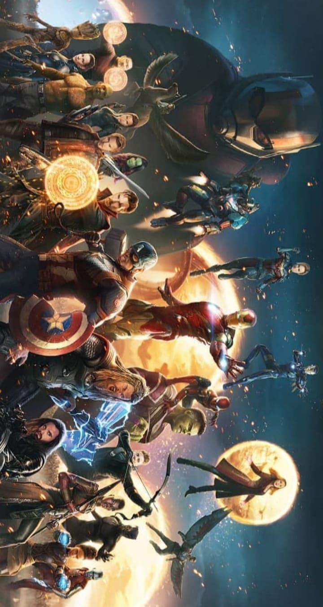
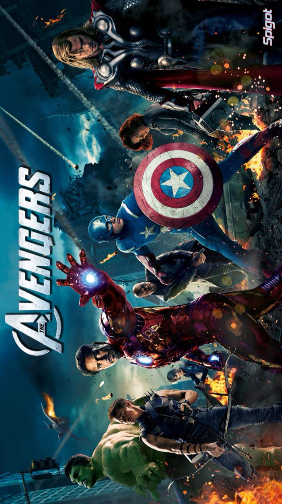
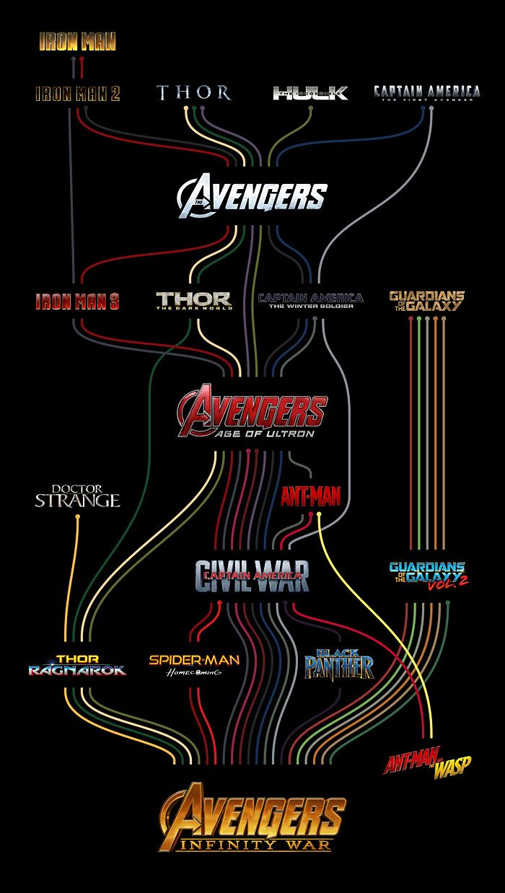
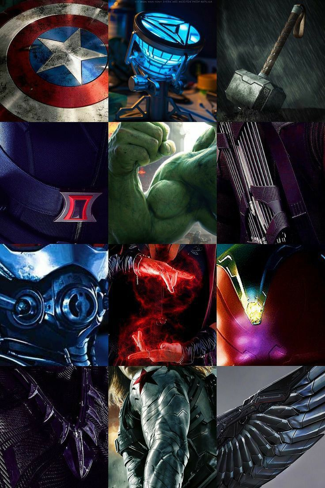
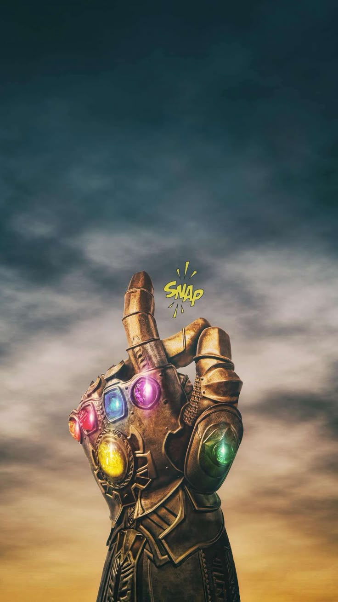

Marvel Studios is a famous entertainment company known for its superhero movies, comics, and web series. Marvel has created many popular characters such as Iron Man, Spider-Man, Captain America, and Hulk. The Marvel Cinematic Universe (MCU) connects different superhero stories into one exciting universe filled with action, adventure, and powerful villains. Marvel movies are loved by millions of fans around the world because of their storytelling, visual effects, and memorable characters
heros

The Marvel universe is filled with many superheroes who have unique powers, skills, and personalities. These heroes protect Earth and the universe from powerful enemies and dangerous situations. Iron Man uses advanced technology and intelligence to fight evil, while Captain America represents courage, leadership, and justice. Thor controls thunder and possesses god-like strength, and Hulk is known for his incredible power and unstoppable rage. Other important heroes include Spider-Man, a young hero with spider-like abilities and quick reflexes, Doctor Strange, who protects reality using powerful magic, and Black Panther, the king of Wakanda with advanced technology and fighting skills. Heroes like Scarlet Witch, Black Widow, Hawkeye, and Captain Marvel also play major roles in protecting the universe. Many of these superheroes join together as the Avengers to battle powerful villains such as Thanos and save billions of lives. Their teamwork, sacrifice, bravery, and determination make Marvel heroes loved by fans all around the world.
Villains

The Marvel universe is also famous for its powerful and dangerous villains who create major threats for superheroes and the world. One of the most powerful villains is Thanos, who wanted to destroy half of the universe using the Infinity Stones. Another well-known villain is Loki, the god of mischief known for his intelligence, magic, and tricks. Ultron is a dangerous artificial intelligence robot created to protect Earth but later turned against humanity. Other famous Marvel villains include Green Goblin, the enemy of Spider-Man, Red Skull, the powerful enemy of Captain America, and Killmonger, who challenged Black Panther for the throne of Wakanda. Villains like Doctor Doom, Venom, and Hela are also known for their strength, intelligence, and destructive powers. These villains make Marvel stories more exciting by challenging the heroes with powerful abilities, emotional conflicts, and dangerous missions. Their actions often create major battles that shape the Marvel universe.
Avengers

The Avengers are a powerful team of superheroes in the Marvel universe who work together to protect Earth from dangerous enemies and global threats. The team was formed when powerful heroes united to fight villains that could not be defeated alone. Some of the main members of the Avengers include Iron Man, Captain America, Thor, Hulk, Black Widow, and Hawkeye. Together, they use their unique powers, intelligence, and teamwork to save the world. The Avengers fought many dangerous villains such as Loki, Ultron, and Thanos. Movies like The Avengers, Avengers: Infinity War, and Avengers: Endgame became huge successes worldwide because of their action, emotional moments, and epic battles. The Avengers symbolize bravery, unity, sacrifice, and hope, making them one of the most iconic superhero teams in the world.
Timeline

The Marvel Cinematic Universe (MCU) timeline shows the order of important events and movies in the Marvel universe. The journey began with Iron Man in 2008, where Iron Man became the first major superhero of the MCU. Later, heroes like Captain America, Thor, and Hulk were introduced. These heroes eventually joined together in The Avengers to protect Earth from powerful threats. As the timeline continued, new heroes and stories expanded the Marvel universe through movies such as Guardians of the Galaxy, Black Panther, and Doctor Strange. One of the biggest events in the MCU timeline was the battle against Thanos in Avengers: Infinity War and Avengers: Endgame. After these events, Marvel introduced the multiverse concept through newer movies and web series, creating even more exciting storylines for fans around the world.
Power

Marvel superheroes and villains possess many unique and extraordinary powers that make them special and powerful. Thor can control thunder and lightning using his magical hammer, while Hulk gains unlimited strength when he becomes angry. Spider-Man has spider-like abilities such as wall climbing, super agility, and spider-sense that helps him detect danger. Some heroes use intelligence and advanced technology instead of natural powers. Iron Man fights using powerful armored suits and high-tech weapons, while Black Panther uses Wakandan technology and enhanced abilities from the heart-shaped herb. Doctor Strange has magical powers that allow him to control time, create portals, and protect different dimensions. Powerful villains also possess dangerous abilities. Thanos became nearly unstoppable after collecting the Infinity Stones, and Scarlet Witch can manipulate chaos magic and reality itself. These incredible powers create exciting battles and make the Marvel universe thrilling for fans.
Infinity Stones

The Infinity Stones are six powerful cosmic stones in the Marvel universe that contain incredible abilities capable of controlling different aspects of existence. These stones played a major role in the Marvel Cinematic Universe, especially in movies like Avengers: Infinity War and Avengers: Endgame. Each stone has a unique power and together they make the user nearly unstoppable. The six Infinity Stones are the Space Stone, Mind Stone, Reality Stone, Power Stone, Time Stone, and Soul Stone. The Space Stone allows teleportation across the universe, while the Time Stone can control and reverse time. The Mind Stone gives control over minds and intelligence, and the Reality Stone can change reality itself. The Power Stone provides unlimited destructive power, and the Soul Stone has mysterious abilities connected to souls and life. Thanos collected all six Infinity Stones and used them in the Infinity Gauntlet to wipe out half of all life in the universe. The Avengers later fought to reverse the destruction and save humanity. The Infinity Stones are considered some of the most powerful objects in the Marvel universe.